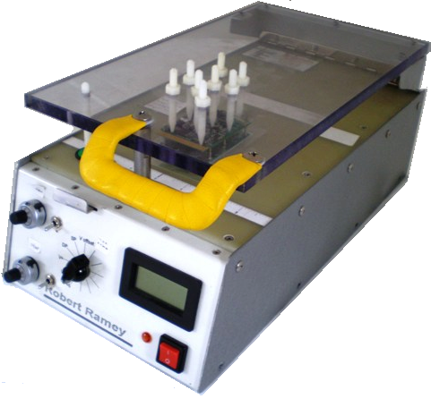

|
|
|
PCB Test Station
When building printed circuit boards there are number of functions which need to
be performed:
- Development testing and trouble shooting
- Calibrating components on the board
- Downloading firmware into components
- Quality control of production units
Usage of modern surface mount technology make this extremely difficult:
- Parts are small that one cannot attach a probe to any of the signal pins.
- Signal traces are very small and insulated with a coating.
- Boards have internal layers which cannot be reached directly.
- Power and signals must be applied to the boards.
These difficulties are addressed by:
- Incorporating test points at various points on the board.
- Building a test fixture with a "bed of nails".
These are spring loaded pins which are precisely aligned to
match the test points.
-
The spring loaded pins are wired to selectors or external connectors which
can then be used perform the above functions.
-
If the board is sufficiently complex, the test station can be connected
to a PC add-in board to measure voltages, frequencies and the like.
With appropriate software, exhaustive testing can be done
automatically

The photo shows the test station built to support the development and manufacture of the
GameBoy variometer.
|